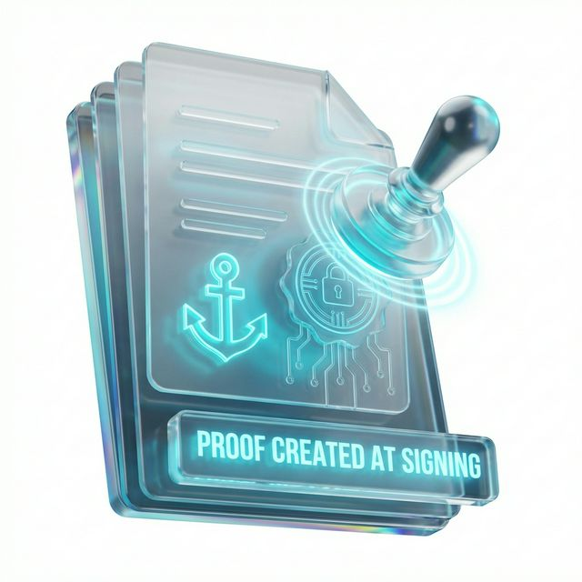

Your proof survives — even if the platform doesn’t
BrillSign ensures signed documents remain verifiable forever — even if you migrate systems or stop using the platform.

Risks of Vendor-Dependent Proof
Vendor Shutdown Risk
Proof verification lost if service ends.
Migration Evidence Loss
Legacy proofs may break.
Contract Longevity Risk
Long contracts outlive platforms.
Access Dependency
Verification tied to vendor login.
How Exit-Safe Proof Works

Step 01
Proof Created at Signing
Cryptographic anchor point generated
Step 02
Proof Attached to Document
Self-contained LTV (Long Term Validity)
Step 03
Independent Tools Verify
Open-source tools validate integrity anywhere
Organizational Impact
Legal
- Long-term contract enforceability
- Vendor-independent evidence
Security
- Reduced vendor risk exposure
Operations
- Easier system migration
- Long-term archival confidence
Comparison Table
| Feature | Platform eSign | BrillSign Exit Safe |
|---|---|---|
| Proof Type |
Vendor locked proof
|
Open verification proof
|
| Dependency |
Platform dependent
|
Platform independent
|
| Migration |
Migration risk
|
Migration safe
|
Seamless Ecosystem Integration
Works alongside your existing storage, archive, and contract management systems without disrupting existing workflows.
Explore Archive & Portability IntegrationsFAQ
Yes — verification remains independent.
No — open verification standard.
Yes — designed for decades-long validity.
Minimal — proof data is very small.